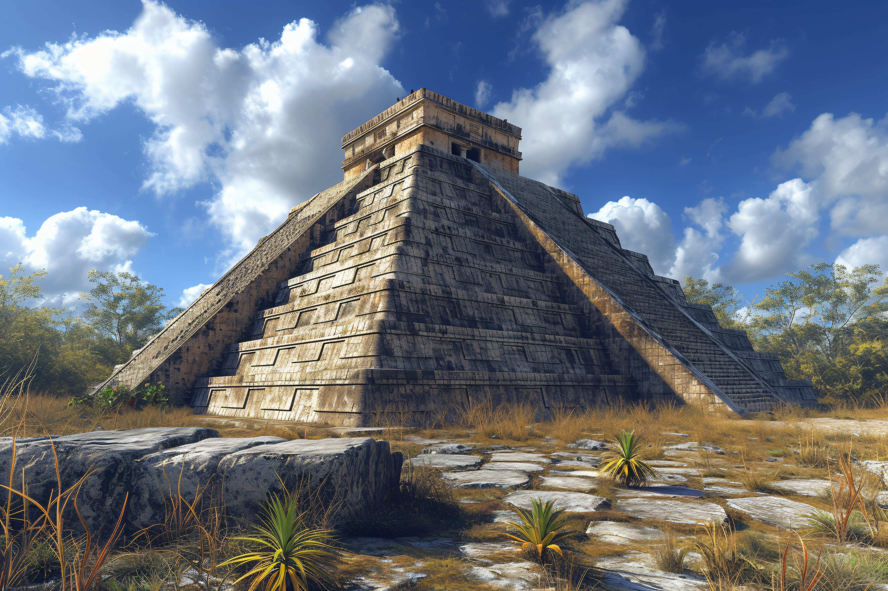

Sobre o Modelo
Este templo asteca foi uma estrutura típica utilizada para rituais religiosos e cerimônias dedicadas aos deuses. Elevado sobre plataformas com escadarias, o templo simboliza a profunda relação entre espiritualidade e poder na cultura asteca.
Origem
Mesoamérica – atual México
Data Histórica
Entre os séculos XIV e XVI
Curiosidades
- Servia para sacrifícios humanos como oferenda aos deuses.
- O mais famoso é o Templo Mayor, localizado em Tenochtitlán.
- A arquitetura piramidal influenciou outras civilizações americanas.